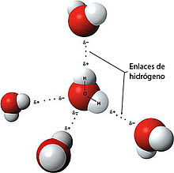
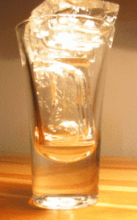
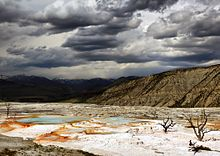

El agua (del lat�n aqua) es una sustancia cuya mol�cula est� formada por dos �tomos de hidr�geno y uno de ox�geno (H2O). El t�rmino agua generalmente se refiere a la sustancia en su estado l�quido, aunque la misma puede hallarse en su forma s�lida llamada hielo y en su forma gaseosa denominada vapor. Es una sustancia bastante com�n en el universo y el sistema solar, donde se encuentra principalmente en forma de vapor o de hielo. Es esencial para la supervivencia de todas las formas conocidas de vida.
El agua cubre el 71 % de la superficie de la corteza terrestre. Se localiza principalmente en los oc�anos, donde se concentra el 96,5 % del agua total. A los glaciares y casquetes polares les corresponde el 1,74 %, mientras que los dep�sitos subterr�neos (acu�feros), los permafrost y los glaciares continentales concentran el 1,72 %. El restante 0,04 % se reparte en orden decreciente entre lagos, humedad del suelo, atm�sfera, embalses, r�os y seres vivos. El agua circula constantemente en un ciclo de evaporaci�n o transpiraci�n (evapotranspiraci�n), precipitaci�n y desplazamiento hacia el mar.
Se estima que aproximadamente el 70 % del agua dulce se destina a la agricultura. El agua en la industria absorbe una media del 20 % del consumo mundial, emple�ndose en tareas de refrigeraci�n, transporte y como disolvente en una gran variedad de procesos industriales. El consumo dom�stico absorbe el 10 % restante. El acceso al agua potable se ha incrementado durante las �ltimas d�cadas en pr�cticamente todos los pa�ses. Sin embargo, estudios de la FAO estiman que uno de cada cinco pa�ses en v�as de desarrollo tendr� problemas de escasez de agua antes de 2030; en esos pa�ses es vital un menor gasto de agua en la agricultura modernizando los sistemas de riego.
